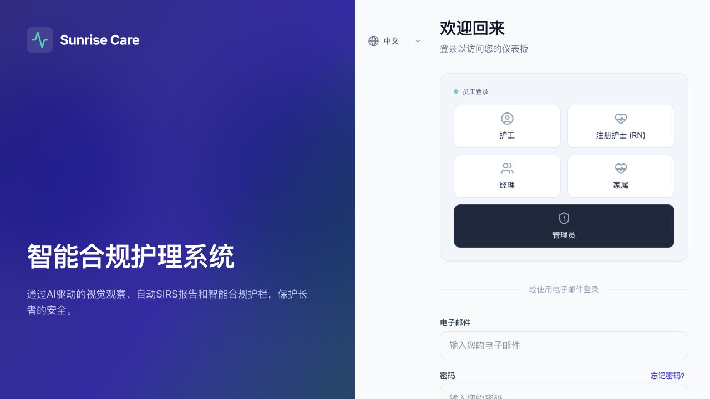
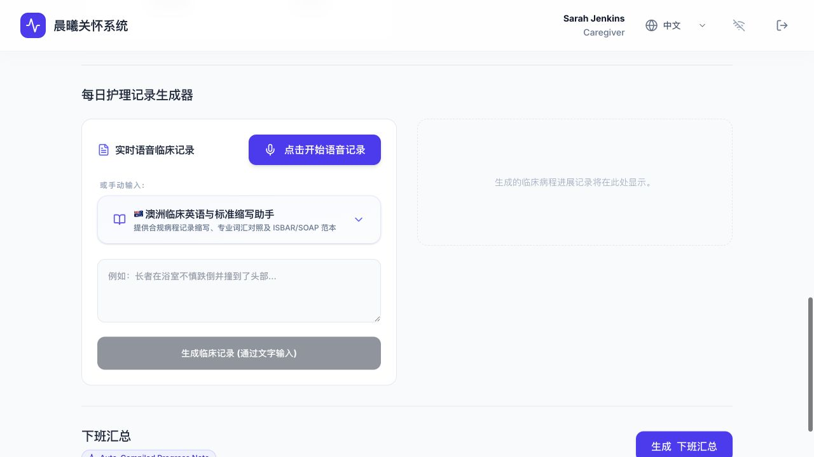
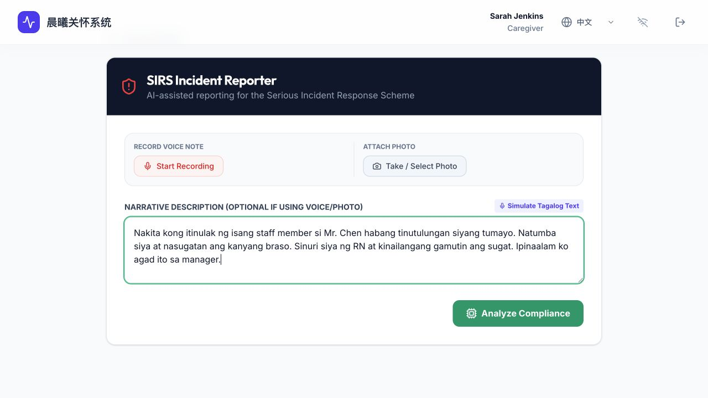
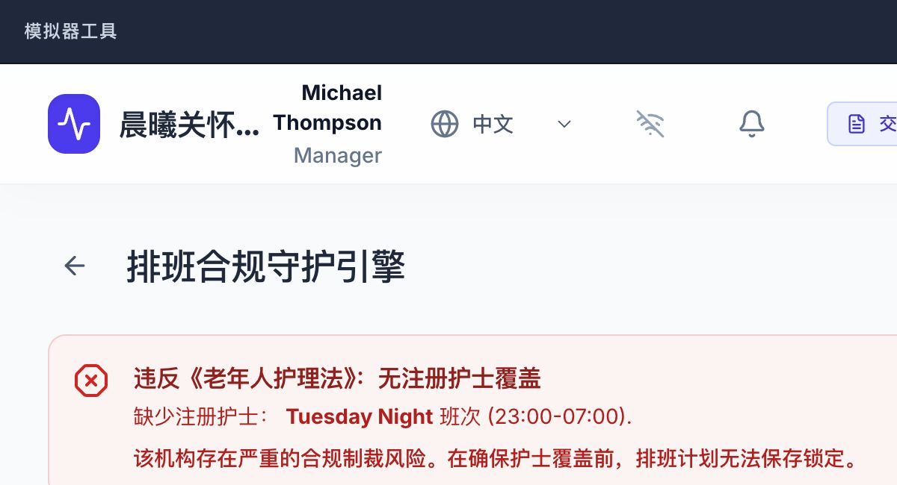

来自不同语言背景的 Carer，要在忙碌 shift 中记录事实、识别风险、通知 RN，还要符合澳洲本地流程。

Role-based access ✓班次授权之外的住民资料自动去标识化，家属、管理员和临床角色各自隔离。

语音 / 文字 / 多语言没有说过的生命体征、家属通知、GP 通知不会被写进记录；建议动作单独列出给 RN。

Tagalog 真实输入理解跨语言事实 → 对照8类 SIRS 事件 → Google Search Grounding 核对 ACQSC 指南 → 生成结构化上报草稿。

Tuesday Night：0 RN24/7 RN coverage 缺口、care minutes 不达标，并禁用保存按钮，直到排班风险被处理。
所有住民与事件数据均为模拟数据。AI 输出需由授权人员复核。